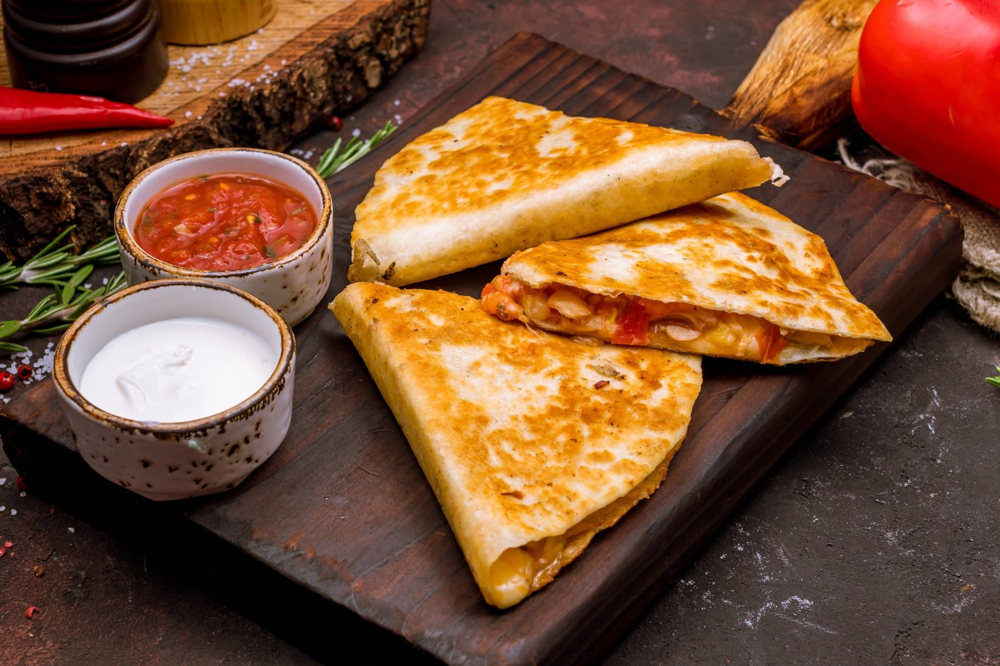

Homepage
Quesadilla

Homemade Chicken Quesadilla
This is a delicious staple of Mexican cuisine.
Ingredients for quesadilla
- Sharp cheddar cheese (grated)
- Monterey jack cheese, (grated)
- Chicken breasts
- Flour tortillas
- Spicy peppers and oinions (optional)
- Cooking oil
Ingredients for marinade
- 2 Tbsp vegetable oil
- 2 garlic cloves (crushed)
- 1 tsp oregano
- 1 Tbsp cumin
- 1 tsp cayenne
- 1 tsp paprika
- 1 tsp white sugar
- 1 lime (juiced)
- 1 Tbsp olive oil
- 1 tsp kosher salt
- 1 tsp freshly ground pepper
Directions
- Start by butterflying your chicken breasts. Place them between sheets of plastic wrap and pound them out flat and even.
- Make a chicken marinade: In a bowl combine 2 Tbsp vegetable oil, 2 crushed cloves of garlic, 1 tsp oregano, 1 Tbsp cumin, 1 tsp cayenne, 1 tsp smoked paprika, 1 tsp white sugar, juice of 1 lime, 1 Tbsp olive oil, salt and pepper. Whisk to combine.
- Place your chicken in a ziploc bag along with your marinade. Get all the air out and zip shut. Massage marinade to ensure an even coating.
- Place in a bowl and refrigerate for 30 minutes and up to 4 hours.
- Preheat skillet over high heat with some vegetable oil. Remove chicken from ziploc and cook until the internal temperature reaches 155°F.
- Remove from heat, let cool, and then slice.
- In the same skillet cook some peppers and onions in a little bit of vegetable oil. Cook until soft, and set aside.
- Grate some monterey jack and some sharp cheddar cheese. Set that aside.
- Preheat your pan over medium heat.
- Add your chicken to a flour tortilla, top with peppers, onions, and cheese. Fold in half and place in a skillet over medium heat with some vegetable oil.
- Flip after 1 and a half minutes, when it's golden brown and then cook the other side for 1 and a half minutes as well.
- Remove from heat, slice up, serve and enjoy!